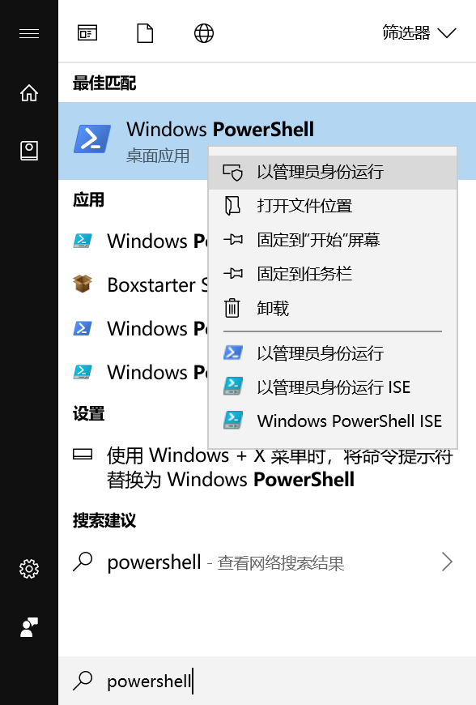

编程开头难
难倒编程小白的第一件事 恐怕是“安装开发工具”，即便是很多 程序猿老司机，也最怕“换电脑、配环境”……
这时可能有人会喷：“肯定用的 Windows！Mac、Linux 这些类 UNIX 系统各种开发工具都自带，装其它的也很方便~”
作为开源老司机的我，Linux 的开发者友好性自不必说，但 Mac 除了移植了整套 UNIX 工具链，接口兼容性、系统扩展性、企业级支持等等还真不如浸淫企业级市场二三十年的 Windows。现在连开发者友好性也不知不觉地落后了，且看我下文分解……
程序猿的“应用商店”
之所以我们现在可以让小白、老司机都能一键安装开发工具，得益于每个流行系统、语言必备的包管理器 —— 相当于图形界面软件的插件/扩展管理器、Windows 常用的 360 软件管家、Android 的 Google Play、iOS 的 App Store。
基本的使用逻辑都一样 ——
搜索 → 安装 → 启动 → 更新 或 卸载
只不过应用商店是在图形界面上点点点，而包管理器是在命令行终端里敲敲敲~
不要看到“敲命令”就眉头紧锁，如果要敲一大堆，怎能叫“一键安装”呢？废话不多，且看代码……
大神说：要有“包管理器”！
Windows 的“巧克力”
Windows 自打有 .Net Framework 后，也推出了 NuGet 包管理器，不过因为最早源自 Visual Studio 扩展，在 VS 之外并不太好用。但开发者社区基于它推出了更强大的包管理器，其中最方便的莫过 Chocolatey，一键安装、开箱即用!
安装包管理器
Set-ExecutionPolicy Bypass -Scope Process -Force; iex ((New-Object System.Net.WebClient).DownloadString('https://chocolatey.org/install.ps1'))
（以上命令在【开始菜单】里搜索 PowerShell，再在其图标上点右键，选“以管理员身份运行”后，输入在打开的命令行窗口中回车执行）


安装软件包
安装成功后，你就能在 CMD、PowerShell、Git Bash、WSL 等任何 Windows 支持的命令行终端里一键安装 命令行工具、软件基础库 和 图形界面软件了 ——
choco install directx
choco install nodejs
choco install googlechrome
搜索软件包
你可以敲命令 ——
choco search nodejs | more
（按【空格】键显示更多）
你也可以直接访问 https://chocolatey.org/packages ——

Google Chrome 用户第二次访问可以 地址栏一把梭 ——


传统命令行终端按 Tab 键提示可用命令、补全文件路径司空见惯，你见过能提示命令行参数、直接搜索软件包的吗？

Mac 的“私酿”
令人费解的总是 乔帮主的套路，一直吹嘘类 UNIX 体系“性能、安全”的 Mac，却不学同门师兄 Linux 的“为自己带包”，包管理器全是第三方开发的，而且还没 Windows 的好用……（果然是“私酿”？呵呵~）
以目前最常用的 Homebrew 为例，安装两个命令行工具才顶 Chocolatey 一个命令的功能 ——
# 主命令只能安装“命令行工具”
/usr/bin/ruby -e "$(curl -fsSL https://raw.githubusercontent.com/Homebrew/install/master/install)"
# 子命令 cask 用于“图形界面软件”安装
brew install cask
brew install nodejs
brew cask install google-chrome
（以上命令若提示“无权限”，须加 sudo 前缀）
再看看它的软件包网页目录，只能【Command + F】整页查找，还没收录 cask 子命令的软件……
新电脑的创世纪
每当我们拿到一台新电脑，在装好包管理器后，开发环境配置就能一把梭了。
Web 前端 / JavaScript 全栈工程师
Windows
choco install -y googlechrome firefox git tortoisegit vscode nodejs-lts nvm.portable
Mac
brew install git nodejs nvm cask
brew cask install google-chrome firefox sourcetree visual-studio-code
Python 黑客
Windows
choco install -y git tortoisegit vscode python
refreshenv
python -m pip install --upgrade pip
# 中国教育网用户切换镜像
# pip config set global.index-url https://pypi.tuna.tsinghua.edu.cn/simple
pip install pipenv
Mac
brew install git python cask
brew cask install sourcetree visual-studio-code
python -m pip install --upgrade pip
# 中国教育网用户切换镜像
# pip config set global.index-url https://pypi.tuna.tsinghua.edu.cn/simple
brew install pipenv